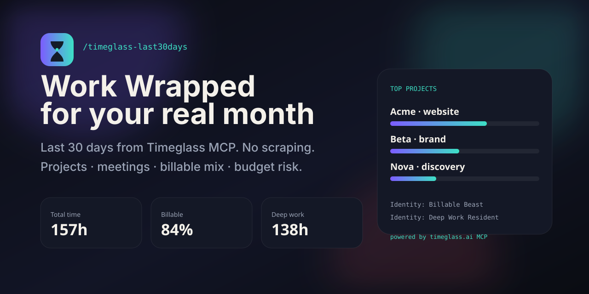

The viral energy of /last30days, pointed at your work —
via Timeglass MCP. No scraping. No CSV archaeology.

Pulls projects, meetings, activities, and budgets from the official Timeglass MCP. Wrong-audience desktop tokens are diagnosed, not looped forever.
Ships with SKILL.md + Claude/Codex/Grok plugin manifests. One install path across Agent Skills hosts.
Self-contained Work Wrapped page you can open locally or host. Stdlib Python engine — zero pip install.
git clone https://github.com/rdsciv/timeglass-last30days.git cd timeglass-last30days python3 skills/timeglass-last30days/scripts/last30work.py --demo --emit all --out ./out open out/work-wrapped.html
MIT · Built to help timeglass.ai show what AI-era timesheets unlock · Star the repo